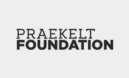

Mobile Technologies
Praekelt Foundation
Praekelt Foundation builds open source, scalable mobile technologies and solutions to improve the wellbeing of people living in poverty. Our programmes have reached over 50 million people across 15 countries in sub-Saharan Africa.
Praekelt Foundation’s mobile projects have 5 focus areas:
- mHealth
- mLearning
- mGovernance
- mEmployment
- mAgri
Content and Government Liaison
Cell-Life
Develop and implement technical systems for health sector, particularly using mobile technology.
- Started as an idea at UCT 2000
- Legally formed in 2004
- Based in Cape Town (at CPUT)
- 22 staff members including:
1. Developers
2. Business Analysts
3. Researchers
4. Support & Trainers - Open Source
- Fully BEE compliant
Clinical and M&E
WRHI
- The RHRU was formed in 1994
- In October 2010, RHRU merged with Enhancing Children's HIV Outcomes (ECHO, a division of WHC)
- WRHI was formed in October 2010 when Wits University formally designated the then Reproductive Health and HIV Research Unit (RHRU) as an Institute of the University
- Headquarters in Hillbrow, Johannesburg but work nationally and regionally.
- 600 staff members